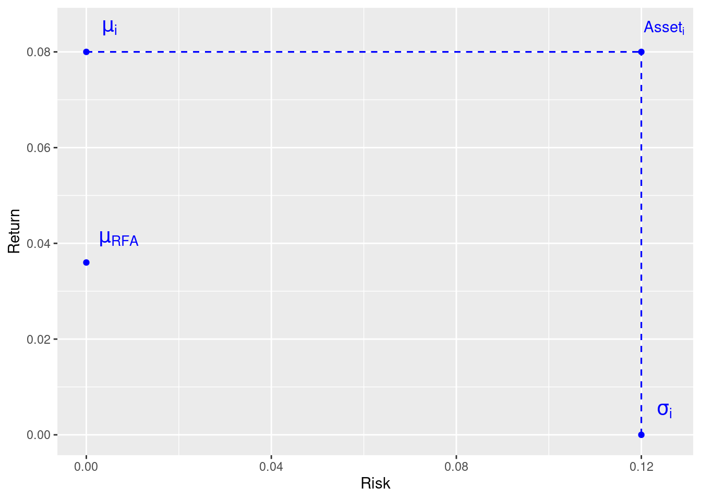
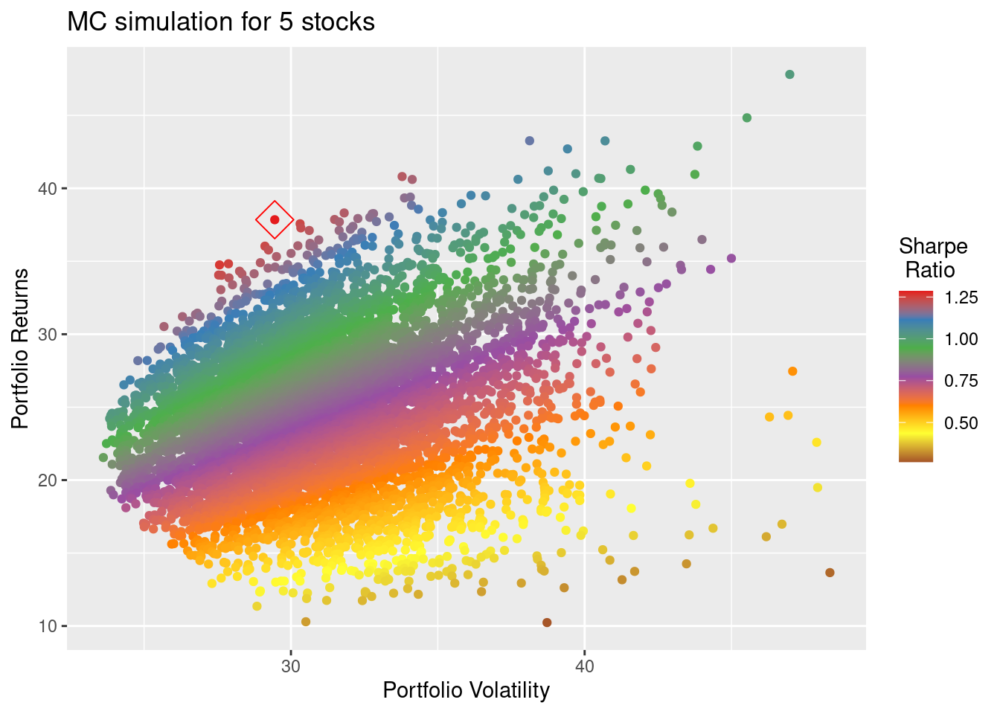

First post on portfolio optimization from a quantitative finance lense.
We are optimizing a portfolio with N assets, where \(N \geq 2\) (N is a positive integer)
Definition 1 The weight of each assets i in the portfolio is defined as:
\[ W_i = \frac{\mbox{Market value of asset i}}{\mbox{Total market value of portfolio}} \tag{1}\]
Of course, the sum of all the weights should be equal to 1.
\[\sum_{i = 1}^{N} W_i = 1 \tag{2}\]
Few assumptions made on the assets.
- each asset has an expected return denoted by \(\mu_i \mbox{ with } i = 1, 2, \ldots, N\). In that sense \(\mu_i = E[R_i]\)
- each asset has standard deviation on their returns denotated by \(\sigma_i \mbox{ with } i = 1, 2, \ldots, N\)
- the correlation between asset i and asset j is denoted by \(\rho_{ij} \mbox{ with } i,j = 1, 2, \ldots, N\). In that sense, \(\rho_{ij} = corr(R_i, R_j)\)
The Mean-Variance Optimization problem can be formulated in 2 ways:
- Highest possible returns for a given amount of risk
- Lowest possible amount of risk for a given expected return
Return is the expected return of the asset and risk is the variance of the returns of the asset.
The Risk-Free Asset (RFA) is the money deposited in a bank account-ish (a secure term-deposit) at a fixed rate R. The expected return is thus R and volatitliy is 0. Also the correlation between the RFA and any other assets is 0.
Each asset can be represented on a 2D-plane with the risk on the x-axis and returns on the y-axis.
There are some other assumptions made when trying to construct a mean-variance optimum portfolio:
- results are based on total returns (include dividends, interest paid, etc.)
- fractional shares are possible
- can deposit and withdraw money freely at the risk-free rate
- no restriction on short selling
- doesn’t account for tax, transaction fees, collateral and margins.
In practice
To bring these idea into practices, there are a few ways to go about it. The first approach is to have Monte-Carlo simulations using historical data for the parameters of the mean and variance. Another approach would be to use numerical methods to find the optimum weights that maximize the sharpe ratio (aka ratio of returns to volatility).
Create MC simulations of weights to assess mean-variance of a portfolio
Let’s get 5 different financial assets: AA, LLY, AMD, SBUX, FDX. Although they are from different industries, it is not a very diverse bunch as they are all from US big companies.
We already have the assets downloaded and we’ll use their closing prices.
library(readr) # read_csv()
library(dplyr) # select(), arrange(), filter(), mutate(), summarize()
library(purrr) # map()
library(tidyr) # drop_na(), pivot_wider(), unnest()
library(glue) # glue()
# read adjusted closing prices and compute annualized daily returns and sd
read_prices <- function(ticker) {
df <- read_csv(glue('../../raw_data/', {ticker}, '.csv')) |>
arrange(date) |>
select(date, adj_close = adjClose) |>
filter(date > '2018-01-01') |>
mutate(ret1d = (adj_close / lag(adj_close, 1)) - 1) |>
summarize(mean_ret = mean(ret1d, na.rm = T) * 252 * 100,
std_ret = sd(ret1d, na.rm = T) * sqrt(252) * 100)
}
assets <- c('AA', 'LLY', 'AMD', 'SBUX', 'FDX')
df <- tibble(ticker = assets,
prices = map(ticker, read_prices)) |>
unnest()| Ticker | Mean Ret | Std of Ret |
|---|---|---|
| AA | 15.90 | 60.72 |
| LLY | 31.79 | 29.78 |
| AMD | 55.31 | 56.70 |
| SBUX | 17.47 | 30.66 |
| FDX | 4.40 | 37.53 |
First, we create the df of returns:
- it’s a long df with only ticker, date, daily returns
- one row per daily observation.
- we drop first row with no returns
- the returns df is a wide df with date and tickers as columns, then daily returns as row
# functions to get daily returns of each assets
create_returns_df <- function(ticker) {
df <- read_csv(glue('../../raw_data/', {ticker}, '.csv')) |>
arrange(date) |>
select(date, adj_close = adjClose) |>
filter(date > '2018-01-01') |>
mutate(ret1d = (adj_close / lag(adj_close, 1)) - 1) |>
select(date, ret1d)
}
# df of each assets and all their daily returns
df <- tibble(ticker = assets,
prices = map(ticker, create_returns_df)) |>
unnest(cols = c(prices)) |>
drop_na()
returns <- df |> arrange(ticker) |>
pivot_wider(names_from = ticker, values_from = ret1d)
head(returns)# A tibble: 6 × 6
date AA AMD FDX LLY SBUX
<date> <dbl> <dbl> <dbl> <dbl> <dbl>
1 2018-01-03 -0.0121 0.0519 0.0125 0.00543 0.0187
2 2018-01-04 0.00367 0.0494 0.0156 0.00446 0.00375
3 2018-01-05 -0.0112 -0.0198 0.00393 0.0123 0.0115
4 2018-01-08 0.0168 0.0337 0.0103 -0.00508 -0.00503
5 2018-01-09 -0.0145 -0.0375 -0.00339 -0.000813 -0.00219
6 2018-01-10 0.0363 0.0118 0.000971 0.000465 0.0108 To optimize the mean-variance of the portfolio, we consider the following
Weights of each assets are \(w = \pmatrix{w_1 \\ w_2 \\ \vdots \\ w_n}\).
Mean returns of each assets are \(\mu = \pmatrix{\mu_1 \\ \mu_2 \\ \vdots \\ \mu_n}\)
Then, the expected portfolio return is \(\mu_{\pi} = w^{T} \cdot \mu\) where \(w^{T}\) is the transpose of \(w\) (aka transforming \(w\) from a column vector to a row vector in order to have right dimensions to compute the dot product).
And the expected portfolio variance is computed by \(\sigma_{\pi}^2 = w^T \cdot \Sigma \cdot w\) where \(\sigma\) is the covariance matrix.
# this df to provide vectors of expected returns
df_stat <- df |>
group_by(ticker) |>
summarize(mean_ret = mean(ret1d, na.rm = T) * 252) |>
ungroup() |> arrange(ticker)
mu = as.matrix(df_stat$mean_ret, nrow = length(assets))
# this df to provide the covariance matrix
# note how we have also multiplied it by 252
sigma <- df |> arrange(ticker) |>
pivot_wider(names_from = ticker, values_from = ret1d) |>
#drop_na() |>
select(-date) |> cov() * 252
sigma <- as.matrix(sigma, nrow = length(assets))
# this function to create one simulation using random weights
create_one_portfolio_simulation <- function(n) {
# pick random weights
weights_rand = runif(length(assets))
weights = matrix(weights_rand / sum(weights_rand), nrow = length(assets))
#these are textbook formula for return and volat of a portfolio
return_pi = as.numeric(t(weights) %*% mu)
volat_pi = sqrt(as.numeric((t(weights) %*% sigma) %*% weights))
sharpe_ratio = return_pi / volat_pi
# wrap everything into a df for later checks / analysis
df <- tibble(portf_ret = return_pi * 100, portf_volat = volat_pi * 100,
weights = t(weights), sharpe_ratio = sharpe_ratio)
return(df)
}
#this is really the only inputs to get
num_portfolio = 5000
mc_simu = tibble(id = 1:num_portfolio) |>
mutate(simul = map(id, create_one_portfolio_simulation)) |>
unnest(cols=c(simul)) |>
arrange(desc(sharpe_ratio))
head(mc_simu)# A tibble: 6 × 5
id portf_ret portf_volat weights[,1] [,2] [,3] [,4] [,5] sharpe_ratio
<int> <dbl> <dbl> <dbl> <dbl> <dbl> <dbl> <dbl> <dbl>
1 4668 36.4 29.2 0.00548 0.325 0.0216 0.479 0.168 1.25
2 900 35.0 28.2 0.0145 0.289 0.0150 0.474 0.208 1.24
3 1872 32.5 26.4 0.00524 0.214 0.0173 0.499 0.265 1.23
4 4041 40.8 33.2 0.0372 0.447 0.0104 0.460 0.0456 1.23
5 2539 33.8 27.6 0.0403 0.263 0.0188 0.465 0.213 1.22
6 4675 35.8 29.3 0.00473 0.331 0.0151 0.422 0.228 1.22Vizualisation of mean-variances points
We have highlithed the portfolio with best mean-variance returns with a red square around its dot.
library(ggplot2)
ggplot(mc_simu, aes(x = portf_volat, y = portf_ret)) +
geom_point(aes(colour = sharpe_ratio)) +
scale_color_distiller(palette="Set1") +
geom_point(data = mc_simu[1,], aes(x = portf_volat, y = portf_ret),
color = 'red', size = 6, shape=5) +
xlab('Portfolio Volatility') +
ylab('Portfolio Returns') +
labs(title = 'MC simulation for 5 stocks', color = 'Sharpe \n Ratio') 